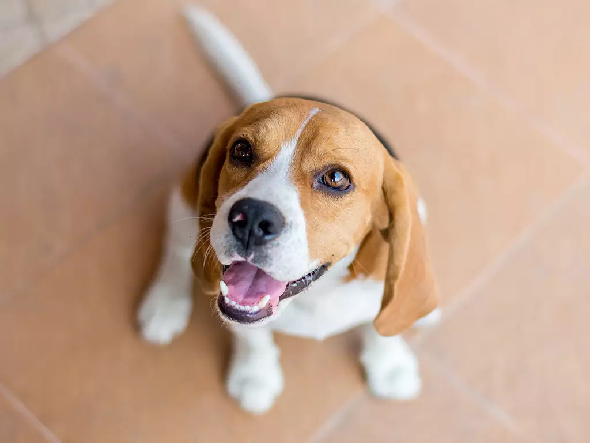

Beagle

A alegria do beagle, ou bigou (como se fala), vai contagiar e divertir diariamente toda a família! Companheiros e aventureiros, adoram descobrir o mundo o tempo todo através do seu faro. Nenhum odor passa batido por esses cachorros, especialmente comida. O beagle encontra facilmente alimentos e adora comer. Mas, é preciso estar atento, pois ele tem tendência à obesidade.
Portanto, leve seu beagle para passear regularmente e permita que ele gaste toda a sua inesgotável energia. E não se deixe levar por sua fofura e olhos suplicantes: cachorros dessa raça são teimosos e gostam de fazer apenas o que querem, tornando o treinamento extremamente importante e obrigatório.
Origem: Inglaterra e Estados Unidos
Peso: 9-13,5 kg
Altura: 33-38 cm
Expectativa de vida: 10-15 anos
História
A história completa do beagle é confusa, pois há pouca documentação confiável de sua origem. Acredita-se que eram cães de caça, que se destacavam por sua rapidez e energia. Seu tamanho pequeno e bom faro reforçam a tese de serem criados como caçadores de sucesso, além de serem desbravadores.
O beagle foi desenvolvido nos anos 1800, gerado a partir das raças talbot hound, o north country beagle e o southern hound, na Inglaterra. Na década de 1860, tornaram-se “beagles americanos”: uma linhagem foi importada e “aperfeiçoada” nos Estados Unidos, com a finalidade de criar padrões de beleza e temperamento mais uniformes. Pouco depois, em 1885, o American Kennel Clube (AKC) reconheceu a raça oficialmente.
Características
Cores da raça
O beagle possui uma ampla gama de colorações e combinações, normalmente envolvendo branco, preto e marrom. Algumas possibilidades são: branco; marrom e branco, vermelho e branco, preto e branco, branco e marrom, limão e branco; com manchas cor de texugo (fios acinzentados e amarronzados), cor de lebre (um tom de bege), lima (um amarelo pálido, próximo ao creme); e até três cores: preto, marrom e branco e azul, branco e marrom, de acordo com a Confederação
Temperamento da raça beagle
O beagle tem uma carinha fofa, que ora parece pidona, ora se mostra sapeca. Essa natureza alegre e conquistadora diz muito sobre sua personalidade dócil e aventureira, que adora desbravar o mundo farejando cheiros por toda a parte, como se estivesse seguindo seu instinto, ou melhor, o seu focinho. E é difícil lidar com os milhões de odores por aí quando se quer ir para um lado e o aroma mais interessante está do outro.
Beagles são livres e independentes, características comuns em cães de caça. Isso também pode tornar o treinamento um grande desafio, pois soma-se a isso a teimosia. Mas não desista! Mesmo que sejam obedientes apenas por alguns minutos, é preciso persistir para ensiná-los e conseguir controlá-los, diminuindo as chances de que móveis e objetos da casa sofram algum dano.
No final, toda essa energia e perfil genioso da raça são adoráveis e vão acertar em cheio o seu coração. As travessuras diárias do beagle irão te divertir e demonstrar todo o seu amor e companheirismo pelo tutor.
A raça com crianças, estranhos e outros animais
Excelente cão para a família, o beagle é carinhoso e brincalhão com os pequenos. Essas características o tornam um ótimo companheiro das crianças, que, com certeza, terão diversão garantida com esse cachorro.
Já os estranhos vão se tornar grandes amigos do beagle rapidamente. A personalidade amigável não é só para os membros da família, e ele recebe com muito prazer qualquer pessoa que chegar em sua casa. Por outro lado, essa característica coloca a sua habilidade como cão de guarda em um péssimo nível.
Essa raça é amigável com outros cachorros e pode ser também com outros animais de estimação, como gatos, desde que seja realizado um trabalho de socialização para garantir a harmonia entre todos e reduzir as chances de problemas ou conflitos.
O beagles late muito?
Sim! O beagle gosta de ser ouvido e é conhecido por latir, uivar e ladrar bastante. Mas não se desespere: é possível controlar sua vontade de mostrar a voz com treinamentos desde filhote.
A raça é destruidora?
Pode ser. Apesar dessa carinha fofa e olhos pidões, não se engane: o beagle tem um grande potencial para ser destruidor, sim. São cachorros muito ativos e enérgicos, que precisam de espaço, além de serem bastante teimosos, o que torna os treinos um grande desafio – mas extremamente necessário e útil. Além do intenso treinamento, uma boa dica para evitar estragos é não deixar seu cachorro longos períodos sozinho.
O beagle é agitado?
Sim! Acredita-se que, na sua origem, o beagle chamava atenção por sua incansável disposição e energia, ansioso para descobrir o mundo com a sua admirável habilidade de farejar. Logo, não existe tempo ruim para esse cachorro quando o assunto é brincar, correr e passear, além de ser quase impossível vê-lo parado sem cheirar nada por aí.
Cuidados
Os cuidados que um beagle demanda estão mais relacionados à sua energia e disposição do que à sua manutenção.
– Treinamento:
é muito importante que sejam treinados desde pequenos para evitar que desenvolvam seu lado levado e sapeca, capaz de destruir móveis e a casa toda
.– Escovação: é importante escovar o beagle semanalmente para soltar com mais facilidade os fios mortos. Como não é um cachorro que solta muito pelo, isso reduz bastante a quantidade de pelagem pela casa.
–Banho: cães dessa raça costumam ser limpinhos naturalmente e sem um odor muito forte. Por isso, banhos são necessários com uma frequência menor, a cada 4 ou 6 semanas.
– Ar livre:
para os beagles que moram em apartamento, é essencial que tenham caminhadas longas regulares em locais que eles possam andar e seguir o seu focinho, ao ar livre. Esses cachorros precisam de liberdade, espaço e querem descobrir o mundo com o seu faro. Caso fiquem muito presos, podem ser bem destruidores em casa.
Saúde
O beagle é um cachorro resistente e, apesar de ter certa tendência à obesidade, é bastante disposto, o que aumenta seu interesse em atividades físicas. Se ele estiver feliz, ativo e com a vacina em dia, as chances de uma vida saudável são muito altas. Confira os pontos de atenção da raça:
– Quadril: uma das doenças mais comuns em cachorros ativos é a displasia de quadril, uma má formação nas articulações do quadril que causa dor e prejudica a qualidade de vida do cachorro.
– Coração:
alguns cachorros sofrem de uma má formação do coração ou dos vasos ligados ao órgão, geralmente genética.
– Tireoide: o beagle tem a tendência a desenvolver hipotireoidismo, ou seja, baixa produção de hormônios da tireoide. Isso pode causar outros problemas na saúde do cachorro, dentre eles a obesidade. E como é um cachorro que ama comer, é muito fácil ganhar e acumular peso. Por isso, é importante monitorar a dieta, proporcionar atividades físicas e, se for preciso, tratar o problema com o apoio de um veterinário.
Nível de exercícios do cachorro
Essa raça é muito ativa, por isso é fundamental promover atividades físicas diárias. Separe cerca de 60 minutos por dia para uma caminhada de pouco mais de 2km – um total de 16km semanais. Além de deixar o beagle feliz e gastar a sua energia, a sua saúde agradece.
Preço
Agora que você conhece a raça, quer saber quanto custa um beagle? O preço pode variar de R$ 300,00 a R$ 13.000 — o valor foi calculado com base no preço de filhotes da raça nos principais sites de venda do país.
Antes de decidir comprar um cachorro, lembre-se que existem muitos animais abandonados nas ruas ou resgatados por ONGs à procura de uma família amorosa. Adotar é tudo de bom! ?